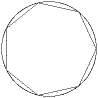
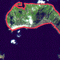
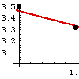
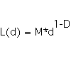
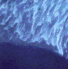

|  |
Standard approach The standard approach to measuring lengths of curves is
to approximate the curve by straight line segments and add up the lengths of the segments. |
|  |
Problems Problems with the standard approach: smaller
measuring scales are sensitive to smaller features of the coastline. |
|  |
Richardson Measuring the lengths of coastlines
at different scales, Richardson observed behavior significantly different from that found
when measuring smooth curves. For most coastlines, measured length appears to increase
rapidly as the measuring scale is reduced. |
|  |
Mandelbrot Mandelbrot's interpretation
of the slope as a dimension. |
|  |
Examples Some examples of coastlines |
|
Sapoval Why are so many coastlines fractal?
Bernard Sapoval suggested a reason, based on his study of fractal drums. |